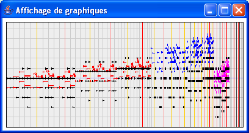

L'affichage de graphiques permet de visualiser des objets musicaux sous la forme d'une représentation type « piano mécanique ». L'axe horizontal utilise une échelle de temps non linéaire (arc-tangente) pour représenter l'ensemble de l'objet dans un espace limité. L'axe vertical représente la hauteur. Les lignes verticales représentes les points temporels particuliers : les secondes, 5 secondes (première ligne jaune), 10 secondes (première ligne rouge), minutes (première ligne noire).